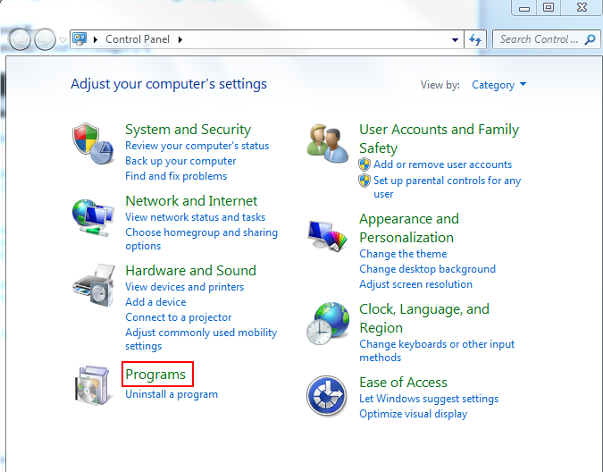
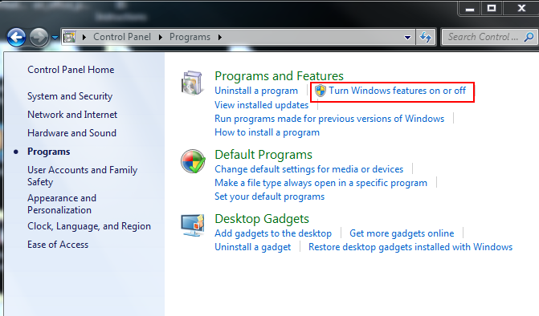
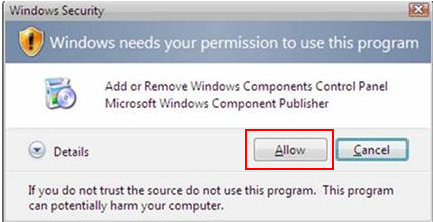
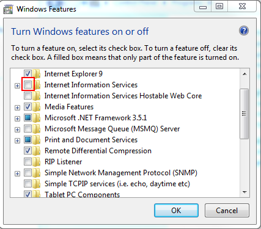

- Click Start and select Control Panel.
- Select Programs or Program Features if not in Category.

- Under the Programs and Features, select Turn Windows features on or off.

- If a Windows Security warning screen appears, select Allow to proceed.

- The Windows Features box will open. Check the Internet Information Services (IIS) button.

- Select OK and close Control Panel